This chapter describes how the design of Chapter 4 was built: the modules, the app, the backend, the database, the main algorithms, and the finished system's screens. The code excerpts are taken from the project's code as of 22 October 2026 (commit ccf9d0b); "..." marks lines left out.
PIP's backend has 19,214 lines of Python and its app 13,493 lines of Dart, not counting tests. These counts include comments, which are long because each one records why the code is as it is. The tests add 34,051 lines of Python in 111 files and 7,623 lines of Dart in 35 files. Table 5.1 lists the modules.
Table 5.1: Modules of PIP
| Module | Files | Lines | What it does |
|---|---|---|---|
| backend/api | 1 | 3,468 | server.py: the FastAPI application, its three middleware layers, 68 REST routes, the chat WebSocket, and the plain functions the routes call |
| backend/core | 18 | 6,085 | The pipeline that runs Stages 0–10; sign-in, keys and profiles; the evidence gate and the Constitution enforcer; the answer cache; the trace; backup and restore checks; the single-instance lock |
| backend/stages | 14 | 3,807 | One module per stage, each with one run function: Stages 0–10 for each message, Stages 11–13 at the end of a session |
| backend/memory | 11 | 4,928 | One module per kind of stored data, such as the profile, chats, decisions, questions for the user, the audit log, and documents with their vector index; each uses plain SQL |
| backend/providers | 3 | 704 | The provider interface and its two implementations, for Ollama and for OpenAI-compatible endpoints |
| backend/config, shared | 3 | 222 | The loader for settings.json, which holds every tunable value, and the chat event types used by both ends |
| frontend/flutter/lib | 27 | 13,493 | The Windows app: start-up, sign-in, the main window and its nine tabs, the REST and chat clients, and the theme |
| scripts, installer | – | – | PowerShell launchers, backup and restore scripts, the Git hook and the Inno Setup installer |
The app is written in Flutter for Windows and holds no logic of its own: it shows what the backend sends and sends back what the user does. Its state is kept with Flutter's own StatefulWidget and setState, without a state-management package, which keeps the app small and easy to test.
The launcher script starts Ollama and the backend in hidden windows and then opens the app. The app first shows a launch screen that reads a progress file written by the launcher and the backend, so the user sees which step of start-up is running, and which one failed if any does. The sign-in screen then lists the profiles, and after sign-in the main window shows the nine tabs described in Section 4.6.
Two classes talk to the backend. ApiClient has one method for each request the app makes; each method turns a path and its data into an HTTP request carrying the bearer token, and turns the JSON answer back into a Dart value, with no caching or retrying. WsChatClient keeps the chat WebSocket open and passes each event (a stage, a token, done, an error or a web search offer) to the chat screen. If the connection drops, it reconnects after two seconds, with only one reconnect waiting at a time, and the app asks the backend whether it is still signed in, returning to the sign-in screen if not.
The chat screen adds each token to the answer as it arrives and shows the answer as formatted Markdown. The theme defines light and dark colour sets whose contrast is checked by tests, and one widget test walks through every control on every tab to check that a screen reader can name it.
The backend is a FastAPI application served by Uvicorn at 127.0.0.1, port 8765 by default. Each request passes three middleware layers, outermost first: CORS, which accepts only a local origin; the bearer-token check; and the lock gate, which refuses every route except the sign-in routes, with status 423, until a password has opened a database. A route then opens a database connection and calls a plain function that does the work, so the functions can be tested without HTTP.
Each chat connection gets its own worker thread, because an encrypted database connection must be used on the thread that opened it. The pipeline is a Python generator: it calls the stages in order and yields an event each time a stage finishes or the model writes a token, and the server forwards each event to the app at once. This is how the app can show each step, and the answer, as they happen. Algorithm 5.1 gives the order of the stages.
Stage 1 sorts a message into one of eight categories (such as general knowledge, project question or personal question) with keyword and pattern rules rather than a model call, which keeps it fast. Stage 9 calls Ollama's HTTP interface through Python's standard urllib library. Every request, from the chat and from the Observer alike, asks for the same 16,384-token window, so the model is not reloaded between them, and for temperature 0, so the model always picks its most likely next word.
At the end of a session, Stage 11 sends the transcript to the local model with a JSON schema as the required output format. Ollama can then only produce output of the expected shape: a list of memory candidates, each with a table, a field, a value, a label and the user's own words as evidence, and a list of decision candidates. The checks of Section 5.5 then decide each candidate.
Table 5.2 lists what PIP protects against and how the code does it. Two principles run through the table. First, every check fails closed: a provider with no consent record is blocked, a provider whose two records disagree about being local is blocked, and a key is tested before it is accepted. Second, every rule is enforced in the backend, so it applies to any program that calls the backend, not only to the app. Listing 5.1 shows the consent gate that runs before every call to a model.
Table 5.2: Security measures in the code
| Risk | Measure | Where |
|---|---|---|
| Someone with the disk reads the profile | The whole database is encrypted with SQLCipher under a key derived from the password (Section 5.4); the key is never written to disk | db_key.py, profile_store.py |
| Document text read from the vector index | Each chunk's text and file path are encrypted with Fernet under a key derived from the database key, and chunk ids are keyed hashes of the path | vector_store.py |
| Guessing the password | PBKDF2 costs about a quarter of a second per guess, and each wrong attempt adds 0.25 s more, up to 1 s | session_key.py |
| Another program calls the backend | It listens on 127.0.0.1 only; every request needs a 64-character random token, compared in constant time; a browser origin must be localhost or 127.0.0.1 | launch_pip.ps1, auth.py, server.py |
| Data used while signed out | The lock gate answers 423 to every route except sign-in, and the database helper refuses on its own as well | server.py |
| One profile's data shown in another | Sign-out forgets the key, empties the answer cache and starts a new cache generation; each profile has its own folder, salt and index | session_key.py, response_cache.py |
| Data sent off the computer without consent | Stage 8 checks the consent record before every model call (Listing 5.1); Ollama cloud models are refused when pulled or selected; the Observer runs only on a model that both records call local | stage_08, server.py, stage_11 |
| A fact stored that the user never said | Grounding, the evidence gate and the Constitution (Section 5.5); sensitive fields wait for the user's confirmation | evidence_gate.py, constitution_enforcer.py, stage_13 |
| A reply posing as the user | Any line in a message that starts with "User:" or "Assistant:" is indented in the transcript, so it cannot be read back as a turn | session_lifecycle.py |
| The record of decisions changed | Triggers refuse UPDATE and DELETE on the audit log, whose rows hold a keyed hash, never the text (Listing 5.4) | schema.sql, governance_audit.py |
Listing 5.1: The consent gate, Stage 8 (shortened)
# backend/stages/stage_08_provider_gate.py, run()
row = conn.execute(
"SELECT provider_id, is_cloud, user_consented, consent_scope, revoked "
"FROM provider_consent WHERE provider_id = ?",
(provider_id,),
).fetchone()
if row is None:
raise ProviderConsentError(...)
is_cloud = bool(row["is_cloud"])
...
if not is_cloud:
if not provider_is_local:
raise ProviderConsentError(...)
return ConsentRecord(...)
if revoked:
raise ProviderConsentError(...)
if not user_consented:
raise ProviderConsentError(...)
if consent_scope == "none":
raise ProviderConsentError(...)
if consent_scope != requested_scope and consent_scope not in _FULL_INFERENCE_SCOPES:
raise ProviderConsentError(...)
return ConsentRecord(...)
Some limits are kept by decision and stated in Chapter 1. An uploaded document is also kept as an ordinary, unencrypted file in the profile's folder; the encrypted copy is the one inside the database. While a profile is signed in, its key is held in the backend's memory and in its process environment. Profile names, and a sign-in picture if the user chooses to show one, are readable without a password, because the sign-in screen must show them before any password is typed.
Each profile's data is one SQLite file encrypted with SQLCipher. When a profile's password is first set, a random 16-byte salt is saved beside the database. At sign-in, PBKDF2-HMAC-SHA512 with 256,000 iterations turns the password and the salt into a 32-byte key, which SQLCipher receives as a raw key in hexadecimal (Listing 5.2). SQLCipher reports a wrong key only when a page is first read, so the backend runs one query on the schema before it accepts a key; a wrong password is therefore reported as a wrong password, not as a damaged database later.
Listing 5.2: Turning the password into a key and opening the database (shortened)
# backend/core/db_key.py
KDF_HASH = "sha512"
KDF_ITERATIONS = 256_000
KEY_BYTES = 32 # 256-bit, the width SQLCipher's raw-hex key syntax expects
SALT_BYTES = 16
def derive_key(password: str, salt: bytes) -> str:
...
return hashlib.pbkdf2_hmac(
KDF_HASH, password.encode("utf-8"), salt, KDF_ITERATIONS, dklen=KEY_BYTES
).hex()
# backend/memory/profile_store.py, get_connection()
if db_key is not None and not re.fullmatch(r"[0-9a-fA-F]+", db_key):
raise ValueError("db_key must be hex-encoded")
...
conn = sqlcipher3.connect(db_path)
conn.execute(f"PRAGMA key = \"x'{db_key}'\"")
The schema is one file, schema.sql (740 lines, 33 tables), applied each time the backend opens a database. Every table is created only if it does not exist, and columns added after the first version are added by a short migration list, so an older database is upgraded in place. Foreign keys are switched on for every connection, and all queries are plain SQL with parameters, without an ORM.
Triggers keep two rules inside the database itself. The audit log's triggers refuse any change or deletion. The record-version triggers add one to a counter after any write to the 13 tables that answers draw on, such as the profile, decisions, documents and chat records; the answer cache includes this counter in its key (Listing 5.3).
An uploaded document is kept in three forms: its bytes inside the encrypted database, an ordinary copy in the profile's folder (one of the limits in Section 5.3.2), and its chunks in the vector index. The text is split into chunks of 500 words that overlap by 50, and each chunk is turned into a vector of 384 numbers by the all-MiniLM-L6-v2 model and stored in ChromaDB. ChromaDB does not encrypt anything itself, so PIP encrypts each chunk's text and file path with Fernet, using a key derived from the database key, before storing them; the vectors stay unencrypted, because ChromaDB must compare them. When the password changes, the index is re-encrypted under the new key together with the database.
Algorithm 5.1 gives the order in which one message is answered, from pipeline.run.
Algorithm 5.1: Answering one chat message (Stages 0–10)
Input: message, chat history, chat id 1 level <- Stage 0: time since the last session 2 intent <- Stage 1: keyword rules -> one of 8 categories 3 plan <- Stage 2: which look-ups this intent needs 4 record <- this chat's record, else its project's latest, else the newest 5 if this is the chat's first message and no web search would be offered: 6 key <- SHA-256(message, project, record version, session, model, record, date) 7 if the cache holds key and it has not expired: 8 deliver the cached answer; stop 9 decisions <- Stage 3; memory <- Stage 4 10 passages <- Stage 5: the 3 closest chunks with cosine similarity >= 0.60 11 if the user clicked a web search offer: results <- Stage 6, with exactly that query 12 prompt <- Stage 7: assemble everything to fit the model's window 13 provider <- Stage 8: the first provider whose consent allows it, else an error 14 for each token the provider streams (Stage 9): send it to the app 15 Stage 10: save each stage's time; cache the answer if its category allows; done
Algorithm 5.2 is the evidence gate. It answers one question, whether the user's own words support the claim, and asks it in a fixed order: first whether the user said the words at all, then whether they contradict the claim, then whether they support it. Each "no" has its own reason, which goes into the audit row. For most kinds of fact, the gate accepts a claim only when the user's words carry a support phrase known for that kind, such as "I prefer" for a preference, and wording it does not know is rejected; a topic needs only that the user asked about it or mentioned it in the first person. This makes the gate fail towards forgetting a true fact rather than towards storing a false one.
Algorithm 5.2: The evidence gate (evidence_gate.adjudicate)
Input: candidate (table, field, value, quote); the transcript's turns, each with its speaker 1 if the quote is empty -> NO_EVIDENCE 2 if the quote is under 3 words, or addressed to the system -> EVIDENCE_INVALID 3 turns <- the transcript turns that contain the quote 4 if turns is empty -> EVIDENCE_NOT_FOUND 5 if none of turns is the user's -> EVIDENCE_NOT_USER_SOURCE 6 if the quote, or any user turn, negates the value -> EVIDENCE_CONTRADICTORY 7 if the quote is only a question, hypothetical or sarcastic -> EVIDENCE_NOT_ENTAILING 8 if the quote never names the value -> EVIDENCE_NOT_ENTAILING 9 if it has no support phrase for this table -> EVIDENCE_NOT_ENTAILING 10 if a skill level is higher than the words allow -> EVIDENCE_NOT_ENTAILING 11 if the quote was cut short of a word that changes its meaning -> EVIDENCE_NOT_ENTAILING 12 otherwise -> EVIDENCE_SUFFICIENT
A candidate the gate accepts has its evidence counted across chats and is then checked against the Constitution (Algorithm 5.3), whose rules and thresholds are read from constitutional.json. Stage 13 acts on the result: APPROVED is written; REQUIRES_CONFIRMATION, TIER_2_REQUIRED and PROMPT_RECONCILIATION become a question on the Review tab; a belief about the user that is discarded only for too little evidence becomes a question too, at most two per chat; anything else is rejected. Every outcome adds one audit row.
Algorithm 5.3: The Constitution check (ConstitutionEnforcer.validate)
Input: candidate, the stored value of the same field, profile age in weeks
1 if the field is name, language or time zone, and is
already set or proposed as a preference -> HARD_REJECT
2 if the table is not one the Observer may write -> HARD_REJECT
3 if the user's behaviour has contradicted the stored value
in at least 3 sessions over at least 14 days -> PROMPT_RECONCILIATION
4 confidence <- (0.9 if the user said it plainly, else 0.4) x min(evidence, 5) / 5
5 if age <= 2 weeks: require evidence >= 1 and a plain statement
elif age <= 4 weeks: require evidence >= 2
else: require evidence >= 3 and confidence >= 0.7 (not for goals)
if not met -> DISCARD
6 if the field is gated (style, goals, projects, skill level) -> REQUIRES_CONFIRMATION
7 if it differs from a stored value of confidence > 0.7 -> TIER_2_REQUIRED
8 otherwise -> APPROVED
Two smaller algorithms protect the user's record. The answer cache key (Listing 5.3) is a SHA-256 hash of everything an answer depends on, including the record-version counter, so an answer stored before the user's data changed is never found again. The audit fingerprint (Listing 5.4) is an HMAC-SHA256 of the table, the field and the value under a random salt kept in each profile, so the audit log can show that two rows concern the same fact without holding the fact itself.
Listing 5.3: The answer cache key and the record-version triggers (shortened)
# backend/core/response_cache.py, cache_key()
raw = _normalize(user_message) + "|" + (project_id or "") + "|" + (
"" if record_version is None else str(record_version)
) + "|" + str(_generation if generation is None else generation) + "|" + (model_name or "") + "|" + (
context_key or ""
)
return hashlib.sha256(raw.encode("utf-8")).hexdigest()
# backend/memory/profile_store.py, install_record_version_triggers()
for table in RECORD_TABLES:
for event in ("INSERT", "UPDATE", "DELETE"):
conn.execute(
f"CREATE TRIGGER IF NOT EXISTS record_version_{table}_{event.lower()} "
f"AFTER {event} ON {table} BEGIN "
f"UPDATE record_version SET version = version + 1 WHERE id = 1; END"
)
Listing 5.4: The audit fingerprint and the append-only triggers (shortened)
# backend/memory/governance_audit.py
def fingerprint(conn, target_table: Optional[str], field_name: Optional[str], value: Any) -> str:
"""HMAC-SHA256 of table, field and value under this profile's salt."""
message = "\x1f".join([
str(target_table or ""), str(field_name or ""), "" if value is None else str(value),
]).encode("utf-8")
return hmac.new(bytes.fromhex(salt(conn)), message, hashlib.sha256).hexdigest()
-- backend/core/schema.sql
CREATE TRIGGER IF NOT EXISTS governance_audit_log_no_update
BEFORE UPDATE ON governance_audit_log
BEGIN
SELECT RAISE(ABORT, 'governance_audit_log is append-only');
...
The figures below show the main features of the finished system. They were taken on 22 October 2026 in a throwaway copy of PIP, with a made-up profile and made-up content, so they hold no real personal data.
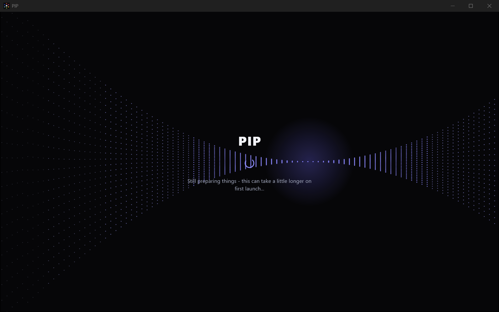
Figure 5.1: The launch screen while PIP starts
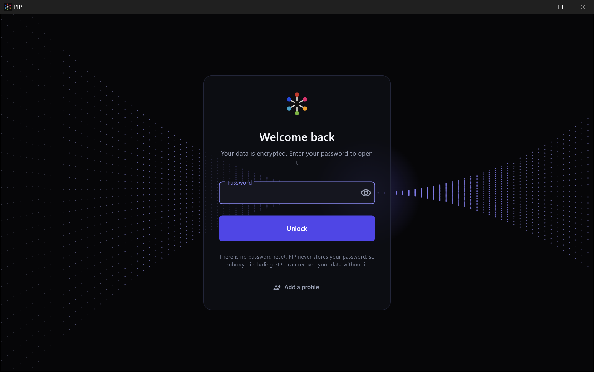
Figure 5.2: The sign-in screen, asking for the profile's password
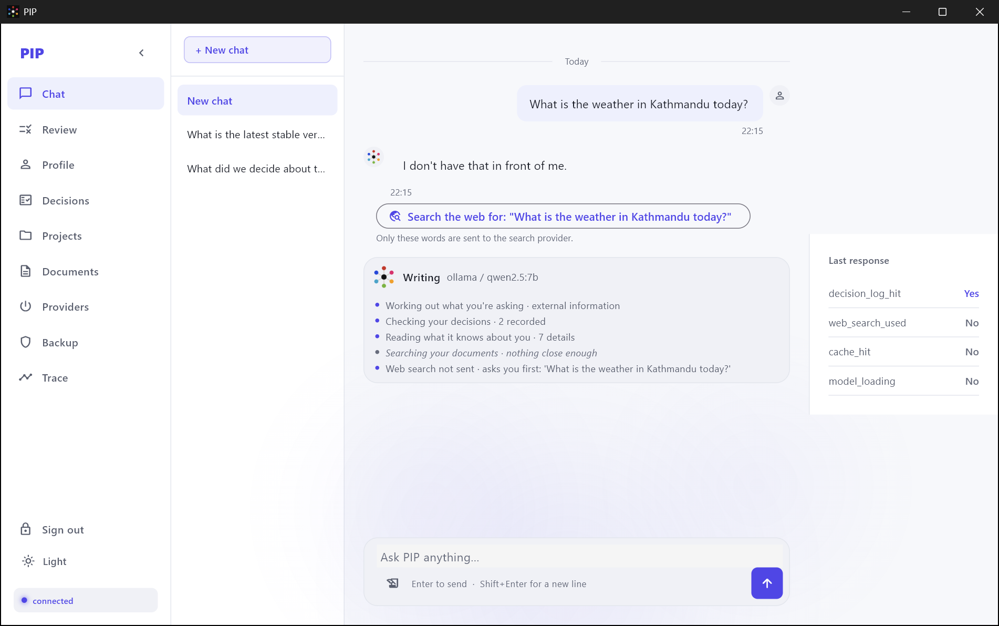
Figure 5.3: A chat, with the stage strip under the answer and a web search offer
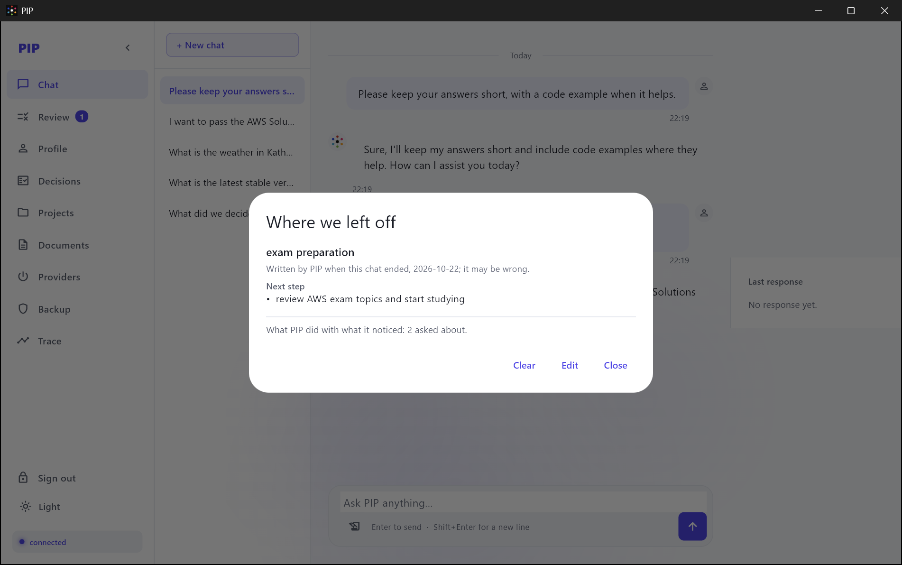
Figure 5.4: The "where we left off" record of a chat, which the user can edit or clear
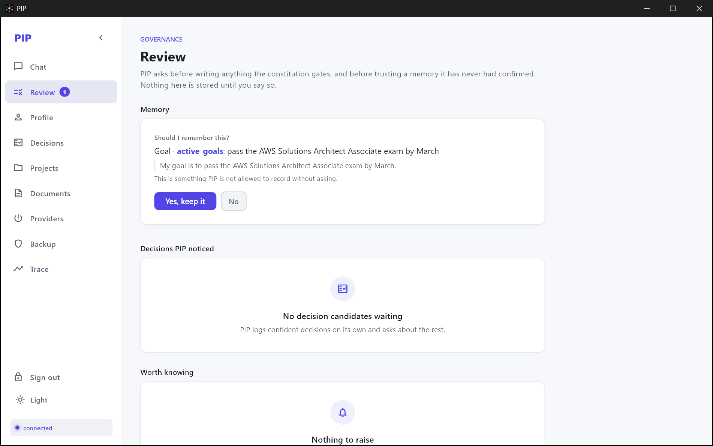
Figure 5.5: The Review tab, with a learned goal waiting for the user's answer
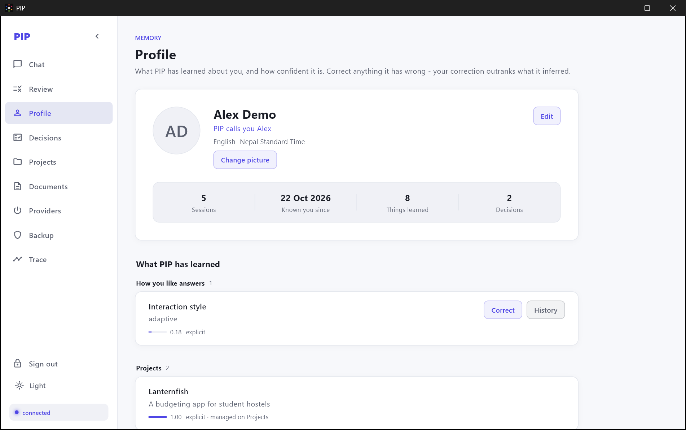
Figure 5.6: The Profile tab, listing stored facts and how each was learned
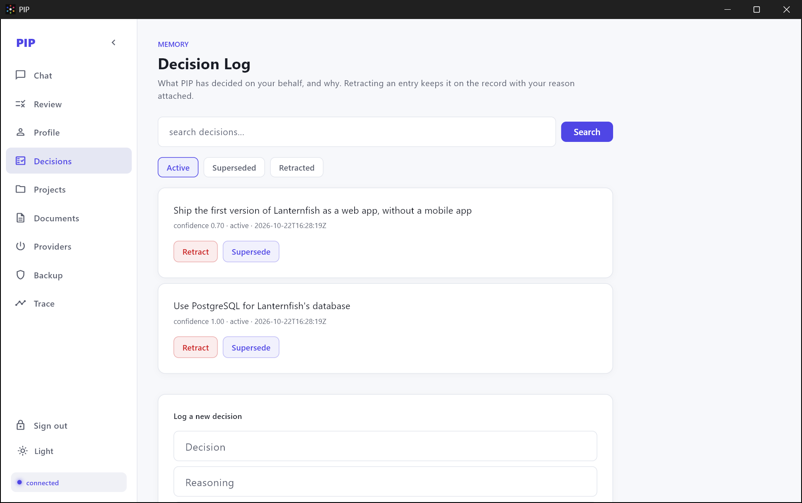
Figure 5.7: The Decisions tab, with two decisions about a project
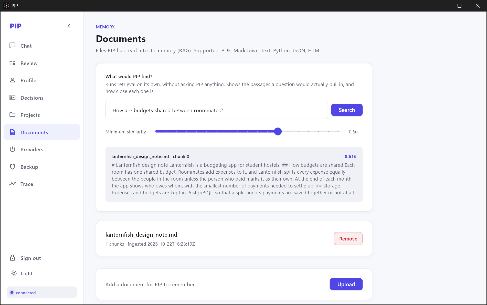
Figure 5.8: The Documents tab, with an uploaded document and a search
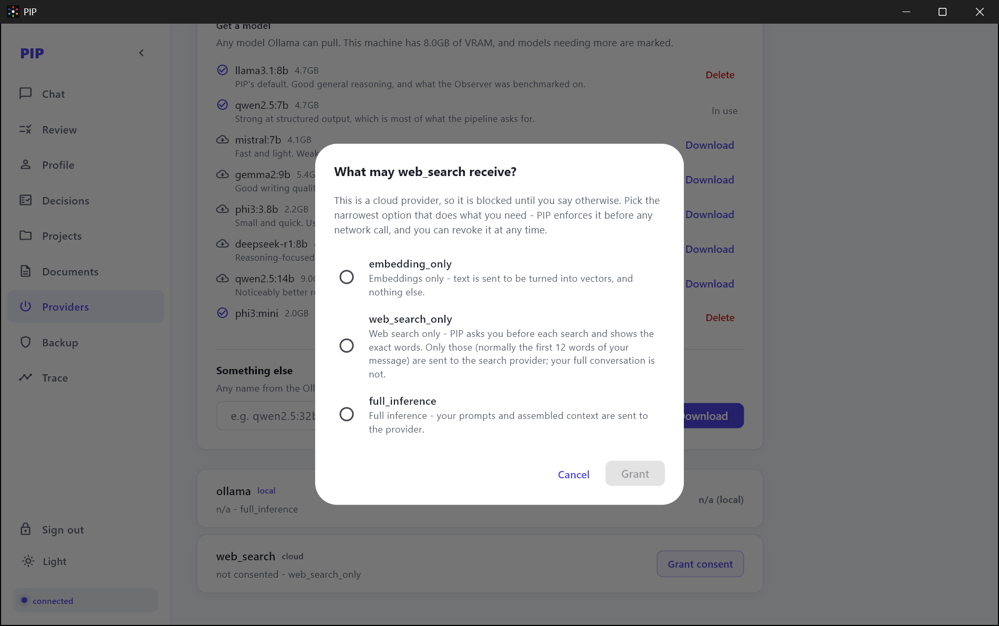
Figure 5.9: The consent dialog for web search, with no scope chosen in advance
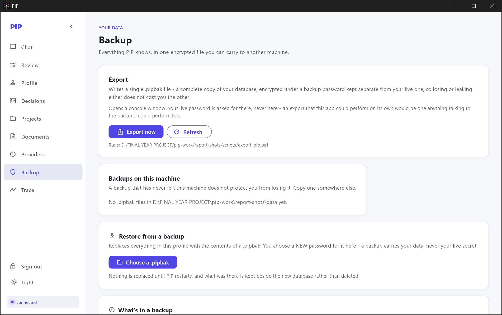
Figure 5.10: The Backup tab
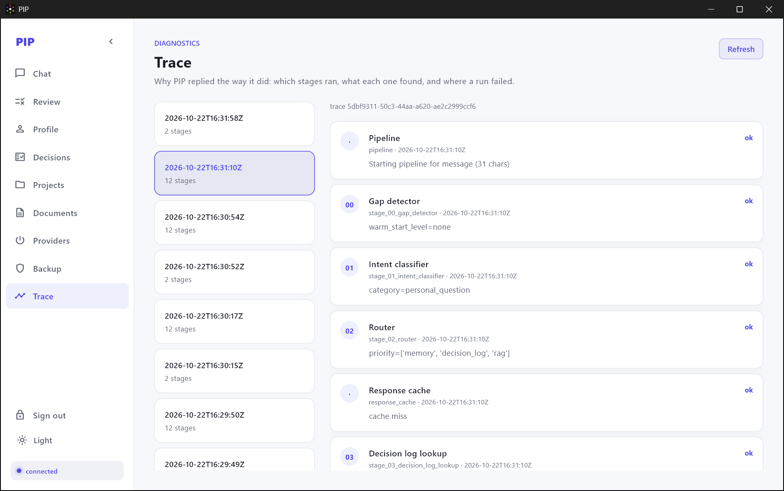
Figure 5.11: The Trace tab, with the stages one message passed through and what each found